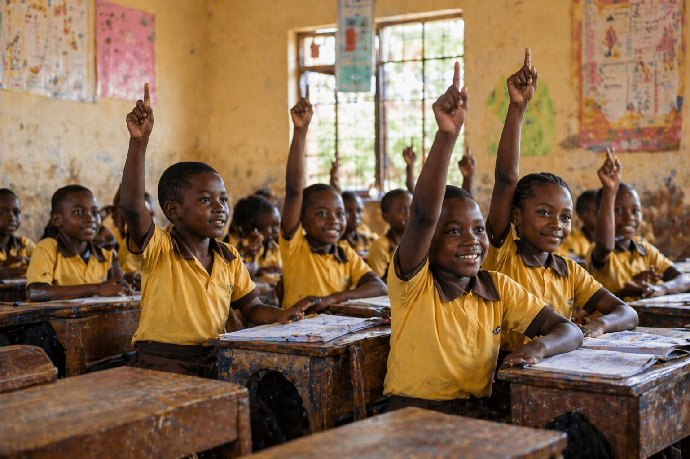

Thrive Path
A mission-driven approach to future readiness, awareness, and human development.
Thrive Path is a future-readiness initiative built to help learners grow in awareness, relevance, and practical capability. It was shaped by the recognition that many young people are educated, but not fully prepared for the realities of work, leadership, and adaptation in a rapidly changing world.

To empower young people and the institutions around them through self-awareness, leadership development, real-world understanding, and the practical frameworks needed to thrive in complexity.
We do not replace school. We strengthen it. Thrive Path adds what conventional learning often cannot fully provide: personal discovery, systems awareness, future-oriented skills, and guided reflection that connects education to life.
Technology, AI, globalization, and economic shocks are changing what success requires. Learners need more than academic performance; they need direction, resilience, and the ability to continue learning, adapting, and contributing.
We are building a brand and a business that speaks with both warmth and seriousness: human-centered enough for schools and families, and credible enough for NGOs, institutions, and long-term partners.
Our Position
The source documents describe Thrive Path as both an educational intervention and a scalable platform model. That means it is designed to create personal transformation for learners while also giving schools, partners, and policymakers a structure they can actually implement and measure.
We begin with the learner as a person, not just an exam candidate, and build around identity, values, resilience, and confidence.
We connect classroom learning to shifting labour markets, digital change, AI, entrepreneurship, and real community challenges.
We are designed to align with school realities, human capital goals, youth employment priorities, and broader development partnerships.
What We Believe
How We Grow